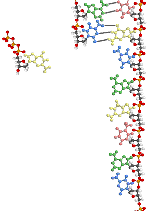
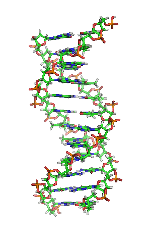

Mnemonic Implosion
— U n d e r C o n s t r
u c t i o n —
Our private senses are not closed systems but are endlessly translated into each other in that experience which we call con-sciousness. Our extended senses, tools, technologies, through the ages; have been, closed systems incapable of interplay or collective awareness. Now, in the electric age, the very instantaneous nature of co-existence among our technological instruments has created a crisis quite new in human history. Our extended faculties and senses now constitute a single field of experience which demands that they become collectively conscious. Our technologies, like our private senses, now demand an interplay and ratio that makes rational co-existence possible. As long as our technologies were as slow as the wheel or the alphabet or money, the fact that they were separate, closed systems was socially and psychically supportable. This is not true now when sight and sound and movement are simultaneous and global in extent. A ratio of interplay among these extensions of our human functions is now as necessary collectively as it has always been for our private and personal rationality in terms of our private senses or "wits," as they were once called.
—
Marshall McLuhan, The Gutenberg Galaxy
The interplay of our five original senses is something we are all familiar with. When we are listening to music, we see the music in our mind's eye, and it would not be too much to say we feel its atmospherics under and on our skin, i.e. these other senses are as much a part of the music as the auditory signal. For example, when we speak of the silver tones of a lyric tenor, this is not metaphor; it is exactly how we experience of the music, visually through the interplay of sound and sight. It is important to note here that these visual qualities are not associations of the audio signal, they are constitutive of the audio signal, i.e. without these visual cues we cannot hear, or be conscious of, the audio signal. We must also see it. Likewise, when we refer to brass instruments as being brilliant or the bassoon as being somber, we are speaking in visual terms. This synesthesia extends to the tactile and olfactory senses. (This is not to say there are not also associations. For example, when some Asians embrace and kiss, they inhale the person in a swift intake of breath.) No sooner do we observe the texture of some object (slick, smooth, graining, gritty, rough, abrasive, etc.) than we sense its tactility. The discomfort we feel when we hear finger nails pulled across on a chalk board is primarily a tactile shock: our whole body winces (as if we had bitten into and tasted a sour apple).
'Synesthesia' first entered the language as a neurological condition, in which the stimulation of one sense or neurological pathway prompts an involuntary response from another sense, as for example hearing sounds in response to visual motion. This medical pathology is closely related to how the human mind actually senses itself or how the senses know one another. That is to say, the senses are defined in terms of one another, and the interplay between them is what we call consciousness.
But when we extend one of the senses with a new technology like print (an extension of language, which is an extension of thought) this extended sense achieves an autonomy independent of the other senses. Set apart from them, it becomes a force unto itself, like a renegade self, resulting in, among other things, the split man, e.g. what McLuhan called the odor of Seneca, who abandoned politcal speech in favor of classroom oration.. And just as a fish does not understand water (because it has no counter-environment with which to compare it) literate man does not understand the element he inhabits: he thinks reading and writing are 'normal' activities.
The spoken word was the medium of operational wisdom, whereas the written word became a repository of classified wisdom.
At the introduction of the printing press, man lost his sense of integration. A part of him split off from the rest, resulting in two cultures, oral and literate.
Unconscious behavior isn't a deliberate act, it can be simple automatic (or unconscious) behavior. When I walk into an unfamiliar room I have to think about turning on the light switch; when I enter a room in my own house I hit the switch without thinking. This is homeostasis, i.e. automatic behavior. Similarly, when I buy a new appliance or piece of PC equipment I have never used before, it will be weeks, maybe months, before I have completely assimilated them and their use is automatic, before I achieve closure or a closed system.
Several factors are in play when speaking of human understanding. Comprehension of the cause and effect relationships that constitute a system or a process is dependent upon the memory of events taking place in space-time. As human memory is limited to a fixed number of terms in the stream of consciousness at any given moment, the span of time and extension of space determine whether perception takes place, i.e. a cognitive event that exceeds the memory's time window will not be completed. So processes explained over a protracted period of time, for example an abstract textbook description, are less likely to be understood than an animated visualization of the same process. Thus, the more we can compress the learning experience in a temporal and visual window, the more inclusive and deep is our grasp of the subject. Compare this verbal explanation of DNA replication with its visualization.
DNA replication. Each strand of the original double-stranded DNA molecule serves as template for the reproduction of the complementary strand. Following DNA replication, two identical DNA molecules have been produced from a single double-stranded DNA molecule. In a cell, DNA replication begins at specific locations in the genome, called "origins". Unwinding of DNA at the origin, and synthesis of new strands, forms a replication fork. In addition to DNA polymerase, the enzyme that synthesizes the new DNA by adding nucleotides matched to the template strand, a number of other proteins are associated with the fork and assist in the initiation and continuation of DNA synthesis.
 |
 |
The limits of human memory can be readily seen during question and answer periods at book readings and press conferences. An interlocutor may ask a two-part question. The respondent will answer one question in exhaustive detail, but then will invariably ask, "Now what was the other part of your question?" This is akin to our visual: the human eye can focus on only a limited number of objects in its field of view (everything else is peripheral), and this is why visual experience lacks the inclusiveness of the auditory world. To perceive a system, the mind's eye must resort to a gestalt, the perception of a general shape. This is the way primitive peoples count; they may have no numbers above (say) five; they recognize twos and threes and fives (a combination of two and three); any higher quantity is called a 'heap.'
Elegant exhibits of prose compression can be found in McLuhan's own writing:
The Greek myth about the alphabet was that Cadmus, reputedly the king who introduced the phonetic letters into Greece, sowed the dragon's teeth, and they sprang up armed men. Like any other myth, this one capsulates a prolonged process into a flashing insight. The alphabet meant power and authority and control of military structures at a distance. When combined with papyrus, the alphabet spelled the end of the stationary temple bureaucracies and the priestly monopolies of knowledge and power. Unlike pre-alphabetic writing, which with its innumerable signs was difficult to master, the alphabet could be learned in a few hours. The acquisition of so extensive a knowledge and so complex a skill as pre-alphabetic writing represented, when applied to such unwieldy materials as brick and stone, insured for the scribal caste a monopoly of priestly power. The easier alphabet and the light, cheap, transportable papyrus together effected the transfer of power from the priestly to the military class. All this is implied in the myth about Cadmus and the dragon's teeth, including the fall of the city states, the rise of empires and military bureaucracies. —Chapter 8
Many would agree that this is McLuhan at his best. Like the myth he is explaining, he has condensed centuries of history, and the evolution of western society, in a succint paragraph. Even if you do not agree with with every detail of McLuhan's analysis, you must acknowledge that he is on the right track, that his methodology is sound. By approaching the subject of the alphabet technologically, historically, culturally and psychologically, he has provided us with a compelling example of his maxim that 'any study in depth is a study in breadth.'
Conversely, the less explicit our understanding of theoretical, spiritual or poetic phenomenon, i.e. the more imagination we bring into play by withholding information, the more deeply do we encompass an event. Linkages that are a product of imagination are more inclusive than those found in the spatial world of efficient cause and effect. In fact, because their field of operation is human fancy, they are without limit. Thus, there are two kinds of information, one concrete and limited, the other transcendent and dynamic. Problems in understanding arise when we apply the methods of one kind of information to the other. The application of imagination to the empirical is called superstition; the application of scientific method to the theoretical is called reductionism or behaviorism.
Aids to
Understanding: |
Blocks
to Understanding: |
| Resonant space, discontinuity, immediacy of intuition, interval | 3-Dimensional space, indirection of medium: literacy (the alphabet and printing press) |
| Visualization, animation, organic process | Linguistic reductionism, fragmentation, step by step mechanical process |
| Poetic compression, succinct or pithy prose, aphorism | Slack narrative and exposition |
| Electric speedup, instantaneous communication, plenary retrieval | Fragmentation in protracted time |
| Mythic dimension (prophesy; character is destiny), pattern recognition, historical gaze, operational wisdom | Specialized knowledge, classified data, serial explanation |
| Processes in real (existential) time | Processes in historical or theoretical time |
| Metaphysical effect (perceived value of connection, association or mnemonic event), existential urgency | Discursive, repetitive learning, brute force memorization (rote memory) of specialized information, uninteresting material |
| The search or problem-solving mode of hunter-gatherers (example: factory workers and lighting) | Anal collection of facts |
| Involvement in depth | Fragmentary consciousness and specialization |
| Awareness of configuration and patterns of new media, gestalt | Hypnotized in the true Narcissus style by the amputation and extension of our own being in a new technical form. |
| Discrete cause and effect events vanish in the instant, organic, cohesive oneness of dynamic motion | Perception of cause and effect, the conctenation of events, by the fragmentation of process |
Fragmentation Versus Mnemonic Implosion
Newton's vision of the universe as a clockwork mechanism versus Blake's vision of God's creation as an organic wholeness.
Zeno's false paradoxes based on fragmentation of time versus the Bergsonian perception of time as a dynamic, concrete, existential reality. E.g. the saying that a broken clock is correct twice a day is false. Since time is indivisible a clock is never 'correct.'
The Teutonic division of the modern university into specialized departments versus the perception of human knowledge as an interconnected organic whole. Or as McLuhan wrote, 'any study in depth is a study in breadth.'
The encyclopedic indexing of classified knowledge versus the efficiency of instantaneous retrieval by Internet search engines, putting the world's knowledge and collective wisdom of the ages at everyone's fingertips and promoting a universal collective unconscious or the 'technological simulation of consciousness.'